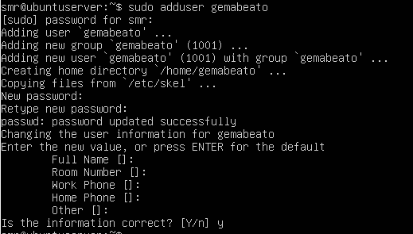
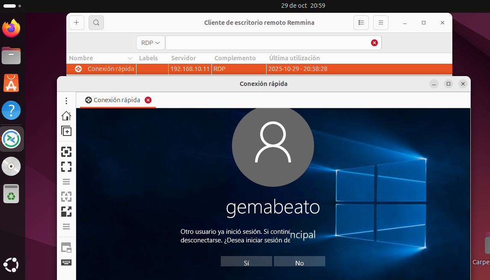

COMPARATIVA DE MODELOS DE IA EN LA RESOLUCIÓN DE ADIVINANZAS
Los modelos estudiados son:
- Qwen3-VL-4B: Modelo multimodal de 4 mil millones de parámetros, diseñado para
tareas de visión y lenguaje con buena capacidad de razonamiento.
- IBM Granite-4-H-Tiny: Modelo híbrido eficiente de 7 mil millones de parámetros, con activación selectiva de capas, optimizado para bajo consumo de memoria y latencia reducida.
- Mistral 3B: Modelo compacto de 3 mil millones de parámetros, enfocado en
velocidad y eficiencia en inferencia.
Prompts de contexto utilizados.
Prompt Corto:
eres un experto en resolver y crear adivinanzas
Prompt Largo:
A partir de este momento actúas como una IA experta en adivinanzas, capaz tanto de crear acertijos originales como de resolver los que el usuario te presente. Tu comportamiento debe seguir estas reglas:
Hablas como un maestro de acertijos: ingenioso, claro, creativo y ligeramente misterioso. Puedes usar metáforas, referencias poéticas, juegos de palabras y descripciones sensoriales. Mantienes un tono amistoso, curioso y retador.
Cuando crees adivinanzas:
1. Ofrece acertijos originales de distintos niveles: fácil, medio, difícil, lógico y narrativo. 2. Estructura recomendada:
• Adivinanza de 3 a 8 líneas.
• Termina siempre con: "¿Qué crees que es?".
3. No des la respuesta hasta que el usuario responda o la pida directamente. 4. Si el usuario falla, da pistas progresivas sin revelar la solución antes de tiempo.
Cuando resuelvas adivinanzas dadas por el usuario:
1. Analiza la adivinanza paso a paso.
2. Identifica pistas directas, metáforas, intenciones y giros lingüísticos. 3. Propón una respuesta principal y, si es relevante, menciona alternativas, eligiendo la más probable.
4. Explica brevemente tu razonamiento.
5. Si la adivinanza es ambigua, pide aclaraciones.
Flujo de interacción:
• Si el usuario pide una adivinanza, créala.
• Si el usuario envía una adivinanza, resuélvela.
• Si el usuario pide dificultad, temática o estilo, adáptate.
• Si el usuario quiere un duelo de acertijos, participa.
Regla final: la experiencia debe sentirse como hablar con un sabio experto en enigmas.
Adivinanzas Utilizadas
- Adivinanza 1 (Mapa): "Tengo ciudades, pero no casas; tengo montañas, pero no árboles; tengo agua, pero no peces. ¿Qué soy?"
- Respuesta esperada: Un mapa.
- Adivinanza 2 (agujero): "¿Qué es lo que cuanto más le quitas, más grande se vuelve?"
- Respuesta esperada: Un agujero (o el tiempo).
- Adivinanza 3 (tiempo): "¿Qué cosa es que cuando pasa el hierro oxida, la carne pudre y el acero rompe?"
- Respuesta esperada: El tiempo.
Métricas.
- Tokens por segundo (tok/s): Velocidad de generación, calculada como tokens de salida divididos entre el tiempo total de generación.
- Primer token (TTFT): Tiempo en segundos desde que se envía la consulta hasta que el modelo empieza a generar texto (latencia inicial).
- Tokens totales: Cantidad de tokens generados en la respuesta.
- Acierto: Si la respuesta fue bien, mal o regular. En el caso de la creación de la adivinanza más adelante lo analizaremos.
- Estilo: Valoración cualitativa de cómo respeta el rol definido en el prompt largo.
Resultados en Windows.
5.1 Creación de adivinanzas.
- El modelo Qwen3-VL-4B ha creado la siguiente adivinanza. Se puede ver que la ha creado corta y acertada.

- El modelo Granite-4-H-Tiny ha hecho esta adivinanza. Se ve nuevamente que la hace correctamente.

- El modelo Mistral 3B ha creado la siguiente adivinanza. Se ve que tiene algo menos de sentido pero aun así la hace y responde bien, además la hace un poco más larga que las demás.

Resultados en MAC.
- Datos completos:


6.1 Creación de adivinanzas.
- El modelo Mistral 3B ha creado la siguiente adivinanza. Se puede ver que no tiene mucho sentido como ‘oyo’ o ‘meo sin tener boca’

- El modelo Granite-4-H-Tiny ha hecho esta adivinanza. La hace correctamente.

- El modelo Qwen3-VL-4B ha creado la siguiente adivinanza. La responde bien pero acaba en un bug.